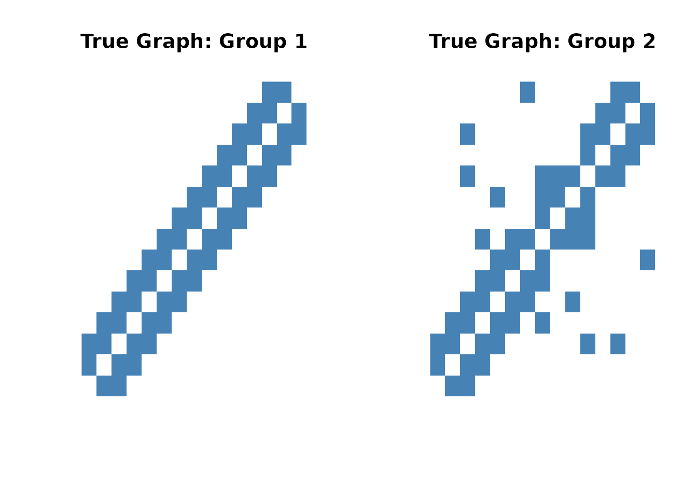

Using spike-and-slab joint graphical lasso
ssjgl.RmdIntroduction
The spikeyglass package implements the Bayesian
Spike-and-Slab Joint Graphical Lasso (SSJGL) from Li et al. (2019). This
method estimates multiple related precision matrices (inverse covariance
matrices) across K groups simultaneously, encouraging shared sparsity
structure while allowing group-specific differences.
Key features:
- Adaptive penalization: spike-and-slab priors automatically determine edge-specific penalty weights
- Two penalty types: fused (penalizes pairwise differences) and group (penalizes L2 norm across groups)
- Posterior edge probabilities: each edge gets a posterior inclusion probability P(delta = 1), enabling principled edge selection
- Missing data handling: built-in imputation via conditional MVN
Simulate data
We generate a small synthetic example with K=2 groups and p=15 variables using a banded (AR-2) graph with a few differential edges.
library(spikeyglass)
sim <- simulate_ssjgl_data(
K = 2, p = 15, n = 100,
graph_type = "band",
perturb_prob = 0.05,
signal = 0.3,
seed = 42
)
# True adjacency matrices
cat("Group 1 edges:", sum(sim$adj_list[[1]][upper.tri(sim$adj_list[[1]])]), "\n")
#> Group 1 edges: 27
cat("Group 2 edges:", sum(sim$adj_list[[2]][upper.tri(sim$adj_list[[2]])]), "\n")
#> Group 2 edges: 31
# Visualize true graph structures
par(mfrow = c(1, 2))
image(sim$adj_list[[1]], main = "True Graph: Group 1",
col = c("white", "steelblue"), axes = FALSE)
image(sim$adj_list[[2]], main = "True Graph: Group 2",
col = c("white", "steelblue"), axes = FALSE)
Choosing hyperparameters
SSJGL has three penalty parameters (lambda0,
lambda1, lambda2) and a spike variance
parameter v0. Understanding how to set these is key to
getting good results.
Lambda parameters
The spike-and-slab E-step produces adaptive, edge-specific penalty
weights that multiply the base lambda1 and
lambda2 values. This means the method is relatively
insensitive to the absolute values of lambda1 and lambda2 (Li
et al., 2019) — the adaptive weights compensate. What matters most
is:
-
Scale of lambda1: Should match the scale of your
data.
-
Normalized data (
normalize = TRUE): uselambda1 = 0.01to0.1 -
Raw data: use
lambda1 = 0.5to1
-
Normalized data (
-
Ratio lambda2/lambda1: Controls the balance between
within-group sparsity and cross-group similarity.
-
lambda2 = 0: No borrowing across groups (separate estimation) -
lambda2 = lambda1: Equal weight on sparsity and similarity -
lambda2 > lambda1: Encourage more similar graphs across groups
-
-
lambda0: Diagonal penalty. Use
lambda0 = 1(the method is insensitive to this choice).
Understanding v0: the spike variance
The spike variance v0 is the key model parameter. In the
spike-and-slab prior, each off-diagonal precision matrix entry is drawn
from either:
- Spike: N(0, v0) — this edge is noise
- Slab: N(0, v1 = 1) — this edge is real
The spike standard deviation sqrt(v0) sets the scale
below which partial correlations are treated as noise. For normalized
data, partial correlations live in [-1, 1], so:
-
v0 = 0.1(spike SD = 0.32): weak sparsity, broad spike v0 = 0.01(spike SD = 0.10): moderate sparsity — good default-
v0 = 0.001(spike SD = 0.03): aggressive sparsity -
v0 = 0.0001(spike SD = 0.01): very aggressive, may over-sparsify
With v0 = 0.01, the model treats edges with magnitude
below ~0.1 as noise and edges above ~0.2 as signal, with the posterior
probability smoothly interpolating in between. This produces
well-calibrated posterior probabilities for edge discovery.
The v0 ladder (warm-starting)
The default v0s = c(0.1, 0.03, 0.01) provides a short
warm-start sequence: the EM starts at v0 = 0.1 (smooth
landscape, easier optimization) and anneals to the target
v0 = 0.01. This helps the EM avoid local optima without
running unnecessary extra steps.
For parameter exploration and diagnostics,
make_v0_ladder() generates longer ladders — see
vignette("parameter-exploration") for details.
Fit the model
We use normalize = TRUE (data is not pre-standardized),
lambda1 = 0.5, lambda2 = 0.5, and a short v0
ladder:
fit <- ssjgl(
Y = sim$data_list,
penalty = "fused",
lambda0 = 1,
lambda1 = 0.5,
lambda2 = 0.5,
v1 = 1,
v0s = c(0.1, 0.03, 0.01),
doubly = TRUE,
a = 1, b = 15,
maxitr.em = 100,
tol.em = 1e-4,
normalize = TRUE,
impute = FALSE
)
print(fit)
#> Spike-and-Slab Joint Graphical Lasso (SSJGL)
#> Groups (K): 2
#> Variables (p): 15
#> v0 ladder steps: 3
#> Total EM iterations: 40
#> Total time: 0.9 seconds
#> Group 1: 30 non-zero edges (from precision)
#> Group 2: 32 non-zero edges (from precision)
#> Edges with P(inclusion) > 0.5: 32Extract results
# Precision matrices at the final v0 step
theta_hat <- coef(fit)
# Partial correlations
pcor_hat <- fitted(fit)
# Edge inclusion probabilities
probs <- extract_probabilities(fit)
# Binary adjacency from thresholding inclusion probabilities at 0.5
adj_hat <- extract_adjacency(fit, threshold = 0.5)
cat("Estimated edges (Group 1):",
sum(adj_hat[[1]][upper.tri(adj_hat[[1]])]), "\n")
#> Estimated edges (Group 1): 32
cat("Estimated edges (Group 2):",
sum(adj_hat[[2]][upper.tri(adj_hat[[2]])]), "\n")
#> Estimated edges (Group 2): 32Evaluate performance
Compare the estimated graphs to the truth using TPR, FPR, and AUC:
metrics <- compute_metrics(
fit = fit,
true_adj = sim$adj_list,
true_omega = sim$Omega_list,
threshold = 0.5
)
cat("=== Overall Performance ===\n")
#> === Overall Performance ===
cat(sprintf("Mean TPR: %.3f\n", metrics$overall$mean_TPR))
#> Mean TPR: 0.931
cat(sprintf("Mean FPR: %.3f\n", metrics$overall$mean_FPR))
#> Mean FPR: 0.065
cat(sprintf("Mean AUC: %.3f\n", metrics$overall$mean_AUC))
#> Mean AUC: 0.953
for (k in 1:2) {
cat(sprintf("\n--- Group %d ---\n", k))
g <- metrics$per_group[[k]]
cat(sprintf(" TP=%d, FP=%d, TN=%d, FN=%d\n", g$TP, g$FP, g$TN, g$FN))
cat(sprintf(" TPR=%.3f, FPR=%.3f, F1=%.3f\n", g$TPR, g$FPR, g$F1))
cat(sprintf(" Frobenius norm: %.3f\n", g$frobenius_norm))
}
#>
#> --- Group 1 ---
#> TP=25, FP=7, TN=71, FN=2
#> TPR=0.926, FPR=0.090, F1=0.847
#> Frobenius norm: 1.080
#>
#> --- Group 2 ---
#> TP=29, FP=3, TN=71, FN=2
#> TPR=0.935, FPR=0.041, F1=0.921
#> Frobenius norm: 1.162Select v0 via cross-validation
For real data where the truth is unknown, use cross-validation to select the best v0. This evaluates each v0 independently using held-out Gaussian negative log-likelihood:
v0s_cv <- make_v0_ladder(lambda1 = 0.5, n_steps = 8)
cv_res <- SSJGL_select_v0_cv(
Y = sim$data_list,
v0s = v0s_cv,
folds = 3,
penalty = "fused",
lambda0 = 1, lambda1 = 0.5, lambda2 = 0.5,
maxitr.em = 50, maxitr.jgl = 50,
normalize = TRUE
)
cat("Best v0:", cv_res$v0_best, "\n")Bootstrap confidence intervals
The SSJGL_final_with_pcor_CI function computes bootstrap
confidence intervals for partial correlations at a given v0:
boot_res <- SSJGL_final_with_pcor_CI(
Y = sim$data_list,
v0_best = 0.01,
B = 50,
ci_level = 0.95,
penalty = "fused",
lambda0 = 1, lambda1 = 0.5, lambda2 = 0.5,
normalize = TRUE
)
# Partial correlation point estimate for group 1
pcor_g1 <- boot_res$pcor_hat[[1]]
# 95% CI bounds
lo <- boot_res$CI_lower[[1]]
hi <- boot_res$CI_upper[[1]]
# Edges where CI excludes zero
significant_edges <- (lo > 0 | hi < 0)
diag(significant_edges) <- FALSE
cat("Significant edges (Group 1):",
sum(significant_edges[upper.tri(significant_edges)]), "\n")Tuning summary
| Parameter | Role | Guidance |
|---|---|---|
lambda0 |
Diagonal penalty | Use 1 (insensitive) |
lambda1 |
Edge sparsity | 0.01–0.1 (normalized), 0.5–1 (raw) |
lambda2 |
Cross-group similarity | Same scale as lambda1; ratio controls borrowing |
v0s |
Spike variance ladder |
c(0.1, 0.03, 0.01) for routine use |
v1 |
Slab variance | Leave at 1 |
a, b |
Beta prior for pi |
a = 1, b = p for sparse prior |
doubly |
Doubly spike-and-slab | TRUE recommended for multi-group |
normalize |
Mean-center variables | TRUE unless data is pre-standardized |
Recommended workflow:
- Set
lambda0 = 1, chooselambda1based on data scale - Set
lambda2 = lambda1as starting point (adjust ratio for more/less cross-group similarity) - Use the default
v0s = c(0.1, 0.03, 0.01)(short warm-start to target v0 = 0.01) - Select edges by thresholding posterior probabilities at 0.5
- For real data: use
SSJGL_select_v0_cv()to validate the v0 choice, or bootstrap CIs for edge-level inference